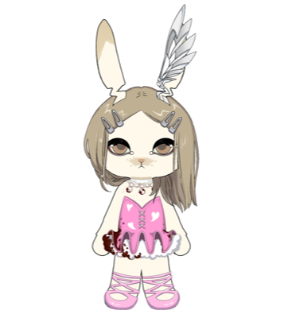

Hello, stranger

this process we follow, this cycle we ride
I'm Ariel!
Mechanical Engineer, self-taught developer. My goal in life is simple, live a life I would love to remember. Spending the next 10 years building something to contribute to the human race.
Contributions
Kairos Research
I host a weekly livestream covering the latests news and developments in the crypto space. Our newsletter has reached +500 subscribers during the first year. Occasionally, I write blogs about MEV, DeFi and the Ethereum Roadmap.
Node Operator
I've been running nodes since Q4 '22. My experience includes running several testnets like Holesky, Hoodi, Celestia or Aztec Network. Today I own the Obol Techne Silver Credential (also I'm delegate for Obol Collective), I'm running several validators for EtherFi, a community validator for Ethereum Mexico, a 0x02 Gnosis validator and a Near Protocol node for Meta Pool.
Previous contributions
Currently I'm part of the EigenTribe Ambassador program, but in the past I co-founded Ethereum Mexico and during almost three years I was Community Lead. In addition, during my first two years I contributed to BanklessDAO as translator, hosted a study group for Token Engineering and worked as researcher for Cryptoversidad.
Interests
Most of my time is spent in some of these topics:
Tech
- 🌳 MEV
- 🕵️ Security
- 🔬 Ethereum Research
- 📊 DeFi
- 📝 Cryptoeconomics
Hobbies
- ♟️ Chess
- 🧠 Reading
- 🤸 Calisthenics
- ⛰️ Mountaineering
- 🏃 Running